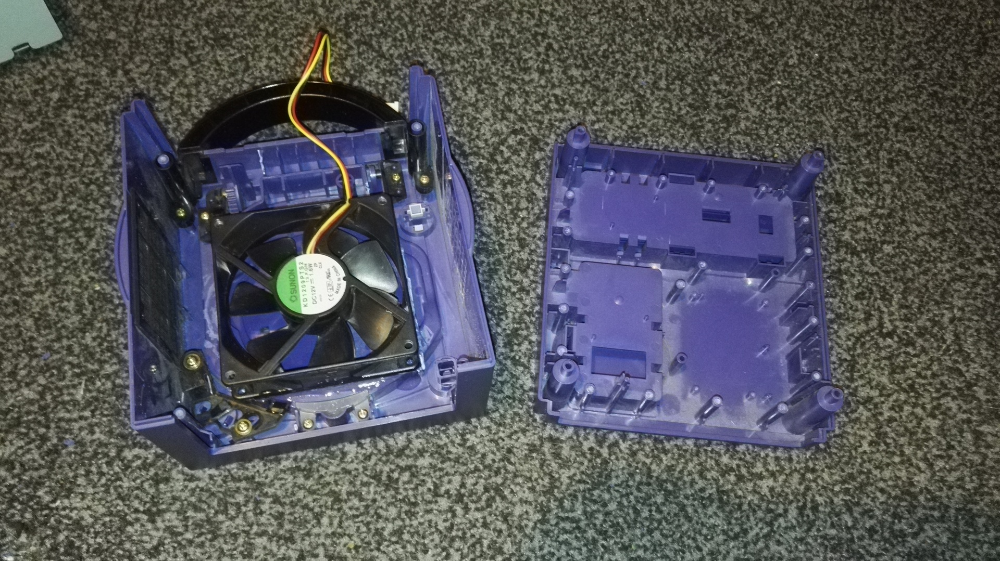
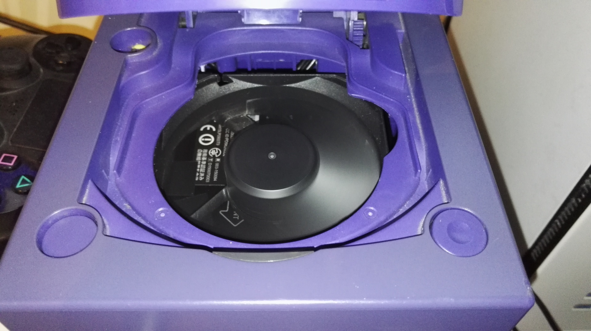

What I Did
The basic item list was: A broken GameCube from eBay, a pack of tri-wing screwdrivers, an Intel NUC (Specifically the model NUC6i5SYH), a GameCube controller port to USB port adapter, and a bunch of things I had lying about, such as the epoxy resin, a dremel, and an old PC fan and power button. The project was fairly straightforward, I gutted the GameCube and dremeled out the bottom, I used some of the tubes in the case as a mount for the NUC. I glued the PC fan where the disk drive used to be and stuck the power switch in place with some molding putty, the cables were then routed underneath the NUC unit to the header pins on the bottom. I took the controller-USB adapter PCB out of its case and stuck it in place of the stock ones on the front of the GameCube shell, after that, I routed all the wires best I could and screwed it all together. With that done, it was just a case of installing an OS, the brilliant Dolphin emulator, and setting up Joy2Key so everything could be controlled via the controller.
The Results
Incredible results, it was infinitely better than having an actual GameCube with all of the scaling options Dolphin provides. You still get that classic feel too by having the emulation set up in this way. The games ran stable at 1080p, with only a few tweaks needed for some games (I'm looking at you Hot Wheels). Temps ranged from 40-60c without the lid open and about 30-50c with it open, the unit was almost silent in my tests even under heavy load, and would run a decent amount of Wii games well too. If you have any questions regarding this project, please feel free to contact me, I'll be happy to clarify on any of the finer points.




Made with by Max Ingham